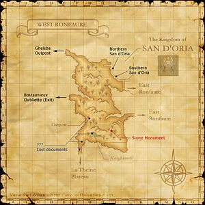

Description
West Ronfaure is an outdoor area in Ronfaure.
Map

Involved in Quests / Missions
| Quest / Mission | Type | Starter | Location |
|---|---|---|---|
| A Sentry's Peril | General | Glenne | Southern San d'Oria (F-8) |
| Advanced Teamwork | General | Vilatroire | West Ronfaure (H-5) |
| An Explorer's Footsteps | Map | Abelard | Selbina (G-9) |
| Chasing Quotas | DRG AF 2 | Ceraulian | Port San d'Oria (I-10) |
| Intermediate Teamwork | Spell | Vilatroire | West Ronfaure (H-5) |
| Introduction To Teamwork | General | Vilatroire | West Ronfaure (H-5) |
| Lufet's Lake Salt | General | Nogelle | Port San d'Oria (G-7) |
| The Dismayed Customer | General | Gulemont | Port San d'Oria (G-7) |
| The Pickpocket | General | Miene | Port San d'Oria (I-9) |
| The Trader in the Forest | General | Abeaule | Northern San d'Oria (F-8) |
| West Ronfaure/Garrison | Garrison | --- | --- |
NPCs
| Name | Location | Type |
|---|---|---|
| Aaveleon | G-6 | — |
| Adalefont | I-5 | — |
| Ballie, R.K. | F-12 | Conquest Overseer: San d'Oria: Outland Guard |
| Cerite | H-5 | — |
| Chatarre | H-5 | — |
| Colmaie | I-6 | — |
| Diadonour | H-5 | — |
| Doladepaiton, R.K. | G-9 | Conquest Overseer: San d'Oria: Outpost Guard |
| Esca | F-6 | — |
| Gachemage | I-5 | — |
| Harvetour | G-9 | Outpost Merchant |
| Kyanta-Pakyanta, W.W. | G-9 | Conquest Overseer: Windurst: Outpost Guard |
| Laette | H-5 | — |
| Laillera | I-6 | — |
| Molting Moth, I.M. | F-12 | Conquest Overseer: Bastok: Outland Guard |
| Palcomondau | E-4/H-5 | Patrol Scout |
| Phairet | I-11 | — |
| Ramaufont | H-5 | — |
| Saradorial | G-10 | Special Event; Goldfish Scooping Vendor |
| Tottoto, W.W. | F-12 | Conquest Overseer: Windurst: Outland Guard |
| Vilatroire | H-5 | — |
| Yoshihiro, I.M. | G-9 | Conquest Overseer: Bastok: Outpost Guard |
| Zovriace | F-12/I-6 | Patrol Scout |
Notorious Monsters
| Name | Level | Drops | Steal | Family | Spawns | Notes |
|---|---|---|---|---|---|---|
| Jaggedy-Eared Jack | 9-10 | Hare Meat Rabbit Charm Rabbit Hide | San d'Orian Carrot |  RabbitsImage source RabbitsImage source | — | L, S, Sc |
| Fungus Beetle | 10-15 | Clipeus Insect Wing Beetle Jaw | — |  BeetlesImage source BeetlesImage source | — | A, L, S |
Regular Monsters


Event Monsters
| Name | Level | Drops | Steal | Family | Spawns | Notes |
|---|---|---|---|---|---|---|
| Marauder Dvogzog | 67 | — | Beastcoin |  OrcsImage source OrcsImage source | 1 | Spawned Mission: Prestige of the Papsque; A, S, Sc |
References
External references describe their own server or retail rules. Documented Zenith changes take precedence.
Map credits: Map 1 — HorizonXI Wiki. Original game maps © SQUARE ENIX; redrawn maps retain the credited authorship and license.

Additional level-75 reference
|
This wooded area lies to the west of San d'Oria's gates. Many years ago, the Orc forces captured the area surrounding Mount Ghelsba, then proceeded to relentlessly dispatch troops into the surrounding region from their newly constructed fort. Not a day goes by without the Royal Knights exchanging blows with the beastmen hordes. Connecting Areas
|
 |

Involved in Quests/Missions
| Quest | Type | Starter | Location |
|---|---|---|---|
| A Sentry's Peril | General | Glenne | Southern San d'Oria F-8 |
| Advanced Teamwork | General | Vilatroire | West Ronfaure H-5 |
| An Explorer's Footsteps | Map | Abelard | Selbina G-9 |
| Chasing Quotas | DRG AF 2 | Ceraulian | Port San d'Oria I-10 |
| Garrison/West Ronfaure | Garrison | Outpost Guard | West Ronfaure G-9 |
| Intermediate Teamwork | Spell | Vilatroire | West Ronfaure H-5 |
| Introduction To Teamwork | General | Vilatroire | West Ronfaure H-5 |
| Lufet's Lake Salt | General | Nogelle | Port San d'Oria G-7 |
| The Dismayed Customer | General | Gulemont | Port San d'Oria G-7 |
| The Pickpocket | General | Miene | Port San d'Oria I-9 |
| The Trader in the Forest | General | Abeaule | Northern San d'Oria F-8 |
| Mission | Country | Starter | Location |
| Mission 1-1: Smash the Orcish Scouts | San d'Oria | Gate Guard | San d'Oria |
| Mission 7-1: Prestige of the Papsque | San d'Oria | Gate Guard | San d'Oria |
NPCs Found Here
Chocobo Digging
|
Fishing
| |||||||||||||||||||||||||||||||||||||||||||||||||||||||||||||||||||||||||||||||||||||||||||||||||||||||||||||||||||||||||||||||||||||

Notorious Monsters Found Here
| Name | Level | Drops | Steal | Family | Spawns | Notes | |||||||
|---|---|---|---|---|---|---|---|---|---|---|---|---|---|
|
10-15 |
|
1 |
A, L, S | ||||||||||
|
9-10 |
1 |
L, S, Sc | |||||||||||
|
67 |
1 |
A, S, Sc | ||||||||||
|
HP = Detects Low HP; M = Detects Magic; Sc = Follows by Scent; T(S) = True-sight; T(H) = True-hearing JA = Detects job abilities; WS = Detects weaponskills; Z(D) = Asleep in Daytime; Z(N) = Asleep at Nighttime | |||||||||||||
Mobs Found Here
| Name | Level | Drops | Steal | Family | Spawns | Notes | |||||||
|---|---|---|---|---|---|---|---|---|---|---|---|---|---|
|
8-10 |
3 |
A, S, M | ||||||||||
|
1-5 |
36 |
H | |||||||||||
|
1-5 |
42 |
H | ||||||||||
|
4-8 |
15 |
A, H, HP | ||||||||||
|
3-6 |
15 |
L, H | |||||||||||
|
1-5 |
75 |
S, Sc | |||||||||||
|
5-8 |
1 |
A, L, S | |||||||||||
|
5-8 |
3 |
A, L, S | |||||||||||
|
4-8 |
18 |
A, L, S | |||||||||||
|
4-8 |
15 |
A, L, S | |||||||||||
|
Unknown |
1 |
A, H | ||||||||||
|
Unknown |
1 |
A, H | ||||||||||
|
3-6 |
26 |
L, H | ||||||||||
|
3-8 |
12 |
A, L, S, Sc | |||||||||||
|
3-8 |
9 |
A, L | |||||||||||
|
4-8 |
9 |
A, L, S, Sc | |||||||||||
|
~12-15 |
1 |
A, H | ||||||||||
|
3-6 |
8 |
H | |||||||||||
|
3-6 |
22 |
L, S, Sc | |||||||||||
|
5-8 |
7 |
A, H, HP | ||||||||||
|
Unknown |
1 |
A, H | ||||||||||
|
0 |
13 |
H | |||||||||||
|
Unknown |
1 |
A, H | ||||||||||
|
0 |
27 |
S, Sc | |||||||||||
|
5-8 |
32 |
L, S | |||||||||||
|
HP = Detects Low HP; M = Detects Magic; Sc = Follows by Scent; T(S) = True-sight; T(H) = True-hearing JA = Detects job abilities; WS = Detects weaponskills; Z(D) = Asleep in Daytime; Z(N) = Asleep at Nighttime | |||||||||||||
Adapted from Eden Wiki: West Ronfaure · Contributors and history · CC BY-SA 4.0. Revision 45406. Layout, links and optional background text adapted for Zenith.